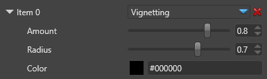

ヴィネッティング
初級 アーティスト プログラマー
ヴィネッティング（Vignetting; 口径食） エフェクトは、画像の角度や周辺を暗くする効果です。
これは、現実のカメラで現れるアーティファクトです。ゲームの中で、シーンの雰囲気を変えたり、画像の中心に焦点を合わせたりする表現に使うことができます。

プロパティ
| プロパティ | 説明 |
|---|---|
| Amount | エフェクトの量／強さeffect |
| Radius | 画面中心から見たヴィネットの半径。低い値ほど境界が厚くなり、中央の空間が狭くなります。 |
| Color | ヴィネットの色 |